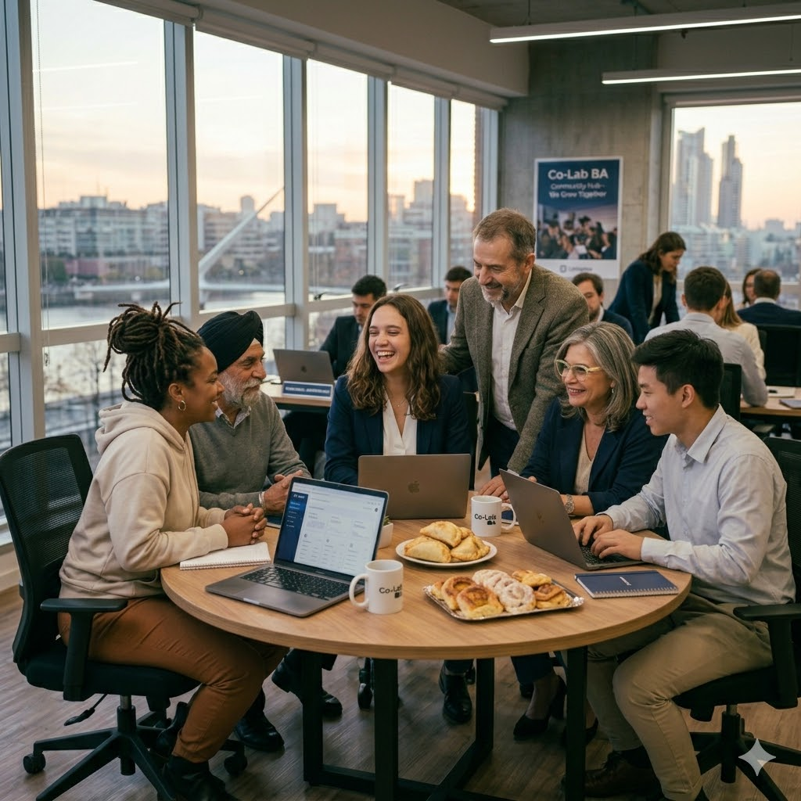

01 · Educación
Becas educativas
Acompañamos a estudiantes con becas integrales que cubren matrícula, materiales y un estipendio mensual durante todo el ciclo lectivo.
Cobertura de matrícula y cuotas
Estipendio mensual para gastos
Seguimiento académico trimestral

02 · Herramientas
Kits AlumKit
Kits físicos y digitales adaptados a cada nivel: útiles, dispositivos, conectividad y acceso a plataformas de aprendizaje accesibles.
Materiales según nivel y carrera
Dispositivos y conectividad
Licencias de plataformas educativas

03 · Oportunidades
Mentorías 1:1
Cada estudiante es acompañado por un mentor o mentora que lo guía semana a semana, en lo académico y en lo personal.
Encuentros semanales personalizados
Mentores formados y supervisados
Apoyo socioemocional integral

04 · Oportunidades
Primer empleo
Conectamos a egresados con prácticas profesionales y primeros empleos a través de nuestra red de más de 60 empresas aliadas.
Prácticas profesionales rentadas
Preparación para entrevistas
Red de +60 empresas aliadas

05 · Comunidad
Red de pares
Una comunidad de estudiantes, egresados y mentores que se sostienen entre sí, con encuentros regionales y espacios seguros de pertenencia.
Encuentros regionales periódicos
Espacios de pertenencia seguros
Mentoría entre pares